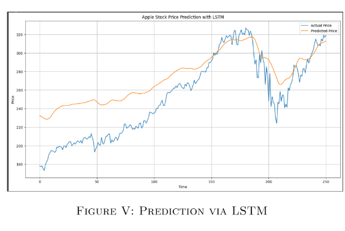

|
Sudmun Hakim Soudho I am a recent Computer Science graduate from BRAC University, where I graduated with Highest Distinction and a CGPA of 3.901/4.00. I have a strong passion for Reinforcement Learning, Computer Vision and Natural Language Processing. I am enthusiastic about exploring advanced topics in Multi-Agent Reinforcement Learning (MARL), with a focus on developing intelligent, adaptive systems. |

|
ProjectsMy experience includes work with PyTorch, TensorFlow, and various AI/ML tools. Selected projects are listed below. |
|

|
Apple Stock Price Prediction using LSTM & BiLSTM
Sudmun Hakim Soudho Academic Project paper I built this for my Machine Learning course (CSE 427) to challenge the idea that stock markets are impossible to predict. I implemented a BiLSTM deep learning model trained on 5 years of Apple stock data. The model achieved an R2 score of 0.90, proving that deep learning can effectively capture complex patterns that traditional methods usually miss. |

|
Optimising Margin based Portfolio Management through Deep Reinforcement Learning
Sudmun Hakim Soudho Personal Project code Collected and preprocessed historical stock data for all Dow 30 tickers (Jan 2009–Apr 2020) from Yahoo Finance, computing technical indicators (e.g., RSI, SMA, CCI) and market signals (VIX, turbulence) for enriched state features.– Implemented a Transformer-based DRL architecture: used multi-head attention (8–16 heads) for temporal and cross-asset feature extraction in a PPO framework, and deployed five specialized agent strategies (profit maximizer, momentum, trend, mean-reversion, volatility) for diversified decision-making. – Integrated realistic margin-trading constraints (dynamic leverage ratios, maintenance margin requirements, borrowing limits) into the trading environment and engineered a multi-objective reward function balancing profit maximization, risk-adjusted returns, drawdown minimization, and margin efficiency.– Achieved superior back tested performance: enhanced model delivered significantly higher risk-adjusted returns and reduced drawdowns. |

|
Night Vision: Footage Enhancement and Colorization using Hierarchical Transformer Architecture
Sudmun Hakim Soudho CSE 463-Computer Vision Project code Engineered a Hierarchical Transformer model combining ViT-32 encoder with progressive deconvolution decoder to automatically enhance and colorize night vision footage while preserving structural integrity and semantic accuracy.Curated specialized ImageNet dataset (40,000 training images) and designed composite loss function balancing perceptual, color consistency, and edge-preservation objectives for low-light enhancement. Achieved superior results (Colorfulness: 39.33) compared to state-of-the-art methods; optimized for real-time deployment in security and autonomous systems. |
|
Template from Jon Barron. |